Manuale software D-Edge
Una pubblicazione di Donatoni Macchine S.r.l.
Versione Software: 2026.1.0.0
Versione Manuale: 1.0
Data: 13/04/2026
- 1 PREMESSE
- 2 D-EDGE
- 2.1 PAGINA INIZIALE
- 2.2 PAGINA ALLARMI
- 2.3 PAGINA RICETTE
- 2.3.1 LAVORAZIONI
- 2.3.1.1 CALIBRATURA SUPERIORE
- 2.3.1.2 CALIBRATURA LUCIDATURA SUPERIORE
- 2.3.1.3 RETTIFICA COSTA
- 2.3.1.4 LUCIDATURA COSTA
- 2.3.1.5 SMUSSO SUPERIORE
- 2.3.1.6 SMUSSO INFERIORE
- 2.3.1.7 TAGLIO SOPRA
- 2.3.1.8 TAGLIO SOTTO
- 2.3.1.9 TAGLIO COSTA
- 2.3.1.10 TAGLIO POSIZIONAMENTO MANUALE
- 2.3.1.11 BOCCIARDATURA
- 2.3.1.12 PULITURA SUPERIORE
- 2.3.2 CORREZIONI
- 2.3.1 LAVORAZIONI
- 2.4 PAGINA STATISTICHE
- 2.5 PAGINA IMPOSTAZIONI
Generalità
Le informazioni contenute in questo documento sono applicabili solamente alle versioni software riportate nel frontespizio.
È possibile che non tutte le funzioni esplicabili dal prodotto siano descritte nella presente documentazione; in questi casi Donatoni macchine non è, comunque, obbligata, a garantire queste funzioni né a preservarle nelle future versioni.
Il presente documento è fornito come allegato “Sezione B”, parte software, del manuale di uso e manutenzione della macchina.
Scopo del manuale
Questo manuale riporta le istruzioni d’utilizzo necessarie per la buona conoscenza del programma D-Edge e informazioni utili per trovare soluzioni a malfunzionamenti.
Dall'osservanza di quanto descritto in questo manuale dipende il regolare funzionamento, la durata e l'economia di esercizio della macchina stessa.
Il manuale d’uso e manutenzione della macchina e il presente manuale software devono essere sempre reperibili nel luogo d’installazione dell’impianto, in posto sicuro e facilmente accessibile. Se uno di essi viene smarrito contattare il responsabile del servizio prevenzione e protezione.
La mancata osservanza di quanto descritto in questo manuale, la negligenza, un cattivo e inadeguato uso della macchina, possono essere causa di annullamento, da parte della Ditta Costruttrice, della garanzia che essa dà alla macchina stessa, ed inoltre si possono non ottenere i vantaggi per cui questa macchina è stata costruita.
La DONATONI MACCHINE SRL, è comunque a disposizione per assicurare una pronta ed accurata assistenza tecnica e tutto quanto può essere utile per il miglior funzionamento ed ottenere il massimo della resa dalla macchina.
La Ditta Costruttrice, si riserva il diritto di modificare, a propria discrezione, la presente pubblicazione ed i dati in essa contenuti qualora lo ritenesse necessario per un miglioramento tecnico o commerciale del prodotto.
Conservazione del manuale
Il presente Manuale Software deve essere custodito per tutta la vita operativa della macchina, anche in caso di cessione a terzi.
Al fine di conservare correttamente il Manuale Software si raccomanda:
Impiegare il Manuale in modo tale da non danneggiare tutto, od in parte, il contenuto; in particolare si raccomanda di non abbandonare il Manuale durante l'utilizzo e di riporlo nel luogo assegnato immediatamente dopo il termine della consultazione;
Non asportare, strappare o riscrivere per alcun motivo le parti del Manuale;
Conservare il Manuale in zone protette da umidità, calore ed altri agenti ambientali che potrebbero pregiudicarne l'integrità o la durata;
In caso di smarrimento o danneggiamento di tutto o parte del contenuto del presente Manuale, richiedere copia di tale documentazione al Costruttore.
Il sistema è stato progettato per facilitare l’operatore nella lavorazione dei pezzi. Attraverso il software è possibile:
Creare ricette per la lavorazione dei pezzi
Controllare e modificare la configurazione dei gruppi e degli elementi che compongono la macchina
Monitorare a video l’esecuzione delle lavorazioni
Visualizzare le statistiche relative alla macchina e al lavoro svolto dalla stessa

Stato operativo della macchina
Lo stato operativo della macchina indica se questa si trova in lavorazione, in attesa di istruzioni, in allerta oppure in errore.
Ad ogni stato è associato un colore, visibile sullo sfondo delle pagine dell’applicativo.
 | Attesa |
Lavorazione | |
Errore | |
Allerta |
Menu laterale
Il menu laterale consente di navigare tra le diverse pagine del programma.

 | Menu |
 | Home |
 | Allarmi |
Ricette | |
 | Statistiche |
 | Impostazioni |
Barra superiore
Nella barra superiore dell’applicativo vengono visualizzati i messaggi di avviso e di errore attivi. Inoltre, viene mostrato il nome della ricetta attualmente caricata in macchina.
L’operatore può accedere alla pagina degli allarmi premendo sui messaggi.

 | Ricetta attiva |
 | Errore |
 | Avviso |
Barra inferiore
A destra della sezione inferiore di ogni schermata sono presenti i pulsanti di utilità.

 | Teleassistenza |
 | Riduci a icona |
 | Arresto |
Teleassistenza
Cliccando sul pulsante della teleassistenza nella barra in basso è possibile aprire un pannello con ID e Password da comunicare quando necessario all’assistenza tecnica Donatoni per permettere il collegamento remoto alla macchina.

L’icona della teleassistenza e lo sfondo del pannello saranno di colore verde se il sistema è on-line e pronto al collegamento, rosso in caso contrario.
ID | |
 | Password |
 | Copia come immagine |
 | Copia come testo |
Ricarica | |
 | Chiudi |
 | Copia come immagine |
 | Copia come testo |
Ricarica |
La pagina “Home” è la pagina di avvio del software, dove è possibile visualizzare alcune informazioni e controllare lo stato della macchina durante la lavorazione.

Visuale della macchina
La sezione principale di questa pagina raffigura un modello tridimensionale della macchina, completa di gruppi ed elementi che la compongono, con cui l’operatore può interagire.

In base alla ricetta caricata in macchina, gli elementi ed i gruppi vengono raffigurati in modo diverso. Colorati se la ricetta corrente prevede una lavorazione per cui sono richiesti, trasparenti in caso contrario.
Elementi disattivi | Elementi attivi |
 |  |
Premendo sugli elementi raffigurati, si aprono delle finestre a comparsa con alcuni dati relativi al componente corrispondente ed al rispettivo gruppo di lavoro di appartenenza.
Ognuna di queste finestre consente all’operatore la visualizzazione dei dati in tempo reale e la configurazione dei parametri del gruppo e dell’elemento.

Gestione visuale della macchina
Questa sezione permette di modificare la visuale della macchina.

 | Visuale predefinita |
 | Visuale frontale |
 | Visuale frontale alta |
Visuale dall’alto | |
 | Ripristina visuale |
Gestione dei pezzi sul nastro
Da questa sezione l’operatore può tenere traccia dei pezzi in lavorazione, ed eventualmente scaricarli in caso di malfunzionamento.

 | Pezzi sul nastro |
Cancella tutto |
Dati e gestione del nastro
Nella sezione in basso sotto all’anteprima della macchina sono presenti alcuni dati e controlli utente per la gestione del nastro.

 | Avanzamento veloce del nastro |
Velocità di lavoro del nastro | |
Diminuire/Aumentare velocità di lavoro del nastro | |
 | Consumo di Ampere |
 | Velocità corrente del nastro |
Informazioni gestionali
In questa sezione vengono visualizzate le informazioni gestionali attualmente attive con i 3 campi Cliente, Commessa e Ordine Commessa.
Tramite pulsante di modifica è possibile modificare le informazioni, oppure è possibile modificarle da remoto attraverso l’apposito file .csv condiviso.
Una volta modificate, le nuove informazioni verranno associate a tutti i pezzi che verranno inseriti a partire dal momento della modifica.

Cliente | |
 | Commessa |
 | Ordine commessa |
 | Ricetta richiesta |
 | Modifica dati commessa |
Informazioni ricetta attiva
In questa sezione vengono visualizzate le informazioni della ricetta attiva sulla macchina (nome, dimensione, caratteristiche speciali, lista lavorazioni).

 | Nome |
 | Spessore previsto |
Misure | |
 | Lavorazioni ricetta |
Modifica ricetta | |
 | Seleziona ricetta |
 | Aggiorna ricetta |
Selezione ricetta da attivare
Questa finestra, accessibile tramite l’apposito pulsante dalla pagina Home permette di visualizzare le ricette e selezionarne una per il caricamento in macchina.
Cliccando sulla ricetta nella lista ne verrà visualizzata l’anteprima.
I controlli per la visuale sono analoghi a quelli della pagina principale.

Premendo sul modello tridimensionale della macchina, si aprono delle finestre relative all’elemento su cui si è premuto e al relativo gruppo di lavoro di appartenenza.
In queste finestre sono presenti due sezioni con la visualizzazione dei dati in tempo reale e la configurazione del gruppo e dell’elemento.

Sezioni
Le informazioni fornite da ciascuna finestra sono suddivise in due sezioni.

 | Variabili |
 | Configurazione |
Variabili
Questa sezione permette di monitorare in tempo reale le variabili dell’elemento selezionato e del gruppo a cui appartiene.
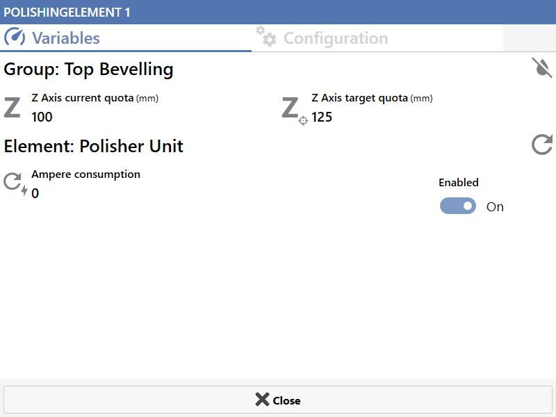
Gruppo
Nella parte superiore vengono mostrate le quote degli assi specifici del gruppo. Da una parte la quota in cui attualmente si trova, dall’altra la quota da raggiungere per la lavorazione della ricetta.
Inoltre, viene sempre indicato se l’acqua per il gruppo è in funzione o meno.

 | Funzionamento acqua |
Elemento
La parte inferiore riguarda invece le variabili specifiche dell’elemento selezionato. Sono sempre disponibili quelle relative all’accensione del mandrino ed al consumo di corrente.
L’operatore può decidere se forzare la disabilitazione dell’elemento a prescindere dalla presenza o meno della relativa lavorazione nella ricetta caricata sulla macchina.

 | Stato lavorazione |
Consumo ampere | |
 | Abilitazione elemento |
Configurazione
Sezione in cui l’operatore deve inserire i dati relativi all’utensile montato sull’elemento.
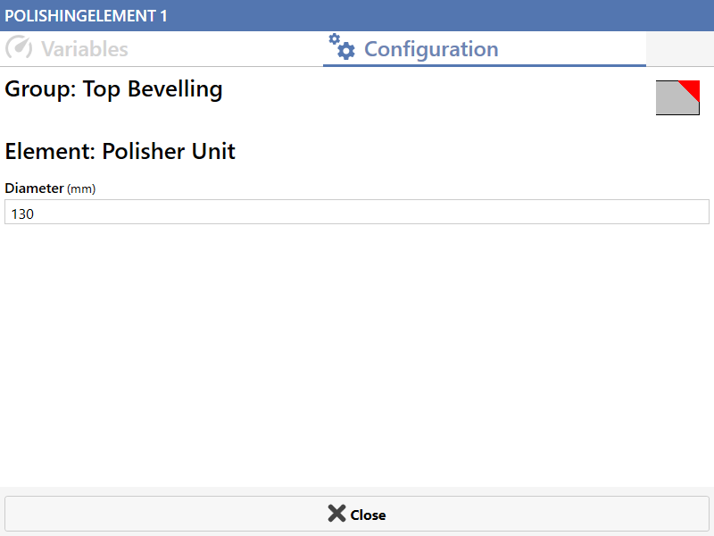
Gruppo
Nella parte superiore vengono mostrate le icone delle lavorazioni che il gruppo può eseguire. In alcuni casi sono presenti pulsanti che consentono di gestire il posizionamento del gruppo.
In caso un gruppo possa avere più configurazioni, l’operatore può decidere quale utilizzare.
Elemento
Nella parte inferiore l’operatore deve inserire i dati relativi all’utensile montato sull’elemento. È necessario inserire correttamente questi dati per ottenere la massima precisione nelle lavorazioni.
È sempre necessario inserire la misura del diametro dell’utensile.
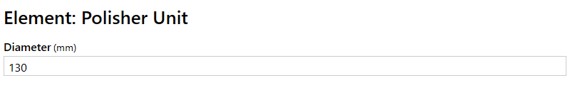
Gruppo calibratore pulitore
Variabili
Nella sezione dedicata al gruppo vengono mostrate le variabili dell’asse Z. Da una parte la quota in cui attualmente si trova, dall’altra la quota da raggiungere per la lavorazione della ricetta.

Sia per l’elemento calibratore che per l’elemento pulitore, non vengono mostrate variabili ulteriori rispetto a quelle comuni a tutti gli elementi.
Configurazione
Nella sezione dedicata alla configurazione del gruppo viene mostrata l’icona della lavorazione di calibratura e lucidatura superiore.
Sotto di essa il pulsante che consente di mandare il gruppo in posizione di sicurezza.

 | Posizione di sicurezza |
Per l’elemento calibratore del gruppo, si devono definire le dimensioni di diametro e spessore dell’utensile montato.
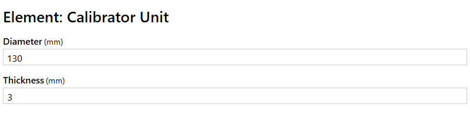
Per l’elemento pulitore del gruppo, si deve inserire la dimensione del diametro dell’utensile montato.
Gruppo lucidatore costa
Variabili
Nella sezione superiore viene mostrato il consumo del mandrino che consente consente l’oscillazione del gruppo. In alto è possibile vedere se l’oscillazione è attiva o meno.

Stato oscillazione |
Nella sezione sottostante, per ciascun elemento pulitore vengono mostrate esclusivamente le variabili comuni a tutti gli elementi.
Configurazione
Nella sezione dedicata alla configurazione del gruppo viene mostrata l’icona della lavorazione di lucidatura della costa.
Per ciascun elemento pulitore del gruppo, si deve inserire la dimensione del diametro dell’utensile montato.
Gruppo smusso superiore
Variabili
Nella sezione dedicata al gruppo vengono mostrate le variabili dell’asse Z. Da una parte la quota in cui attualmente si trova, dall’altra la quota da raggiungere per la lavorazione della ricetta.

Per l’elemento calibratore, vengono mostrate anche le quote relative al pattino.

Per l’elemento pulitore invece, non vengono mostrate variabili ulteriori rispetto a quelle comuni a tutti gli elementi.
Configurazione
Nella sezione dedicata alla configurazione del gruppo viene mostrata l’icona della lavorazione di smusso superiore.
Per l’elemento calibratore del gruppo, si devono definire le dimensioni di diametro e spessore dell’utensile montato.
Per l’elemento pulitore del gruppo, si deve inserire unicamente la dimensione del diametro dell’utensile montato.
Gruppo smusso inferiore
Variabili
Nella sezione dedicata al gruppo non vengono mostrate le variabili di nessun asse.
Per l’elemento calibratore, vengono mostrate anche le quote relative al pattino.
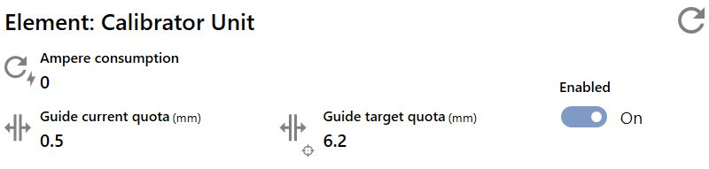
Per l’elemento pulitore invece, non vengono mostrate variabili ulteriori rispetto a quelle comuni a tutti gli elementi.
Configurazione
Nella sezione dedicata alla configurazione del gruppo viene mostrata l’icona della lavorazione di smusso inferiore.
Per l’elemento calibratore del gruppo, si devono definire le dimensioni di diametro e spessore dell’utensile montato.
Per l’elemento pulitore del gruppo, si deve inserire unicamente la dimensione del diametro dell’utensile montato.
Gruppo taglio lama
Variabili
Nella sezione dedicata al gruppo vengono mostrate le quote sia dell’asse Y che dell’asse Z. Da una parte le quote in cui attualmente si trova, dall’altra le quote da raggiungere per la lavorazione della ricetta.
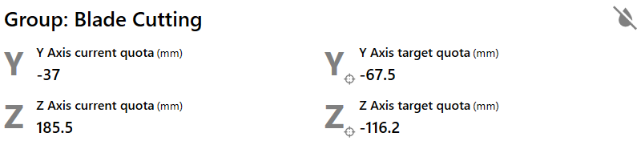
Nella sezione dedicata al all’elemento vengono mostrate solamente le variabili comuni a tutti gli elementi.
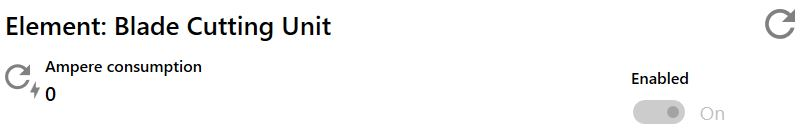
Configurazione
Nella sezione dedicata alla configurazione del gruppo vengono mostrate le icone delle lavorazioni che può eseguire.

I pulsanti situati basso permettono all’operatore di cambiare la configurazione del gruppo taglio lama, in base all’uso che si desidera farne.
A seconda della tipologia e del posizionamento del gruppo taglio lama alcune modalità possono non essere disponibili, in tal caso non verranno mostrate.
 | Taglio sopra |  | Taglio sotto |
 | Taglio costa |  | Taglio posizionamento manuale |
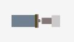 | Rettifica costa | 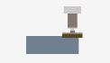 | Calibratura superiore |
A seconda della tipologia e del posizionamento del gruppo taglio lama alcune modalità possono non essere disponibili, in tal caso non verranno mostrate.
Per poter cambiare configurazione o mandare il gruppo in posizioni specifiche, si utilizzano i pulsanti sottostanti.
 | Posizione iniziale |
Parcheggio |
Quando il gruppo è configurato per il taglio con lama, nella sezione dedicata all’elemento l’utente deve inserire i dati relativi al disco montato sull’elemento.
E' presente una figura esplicativa che mostra come misurare i dati.

Quando invece si intende utilizzare il gruppo per lavorazioni di calibratura, è necessario inserire le misure di diametro e spessore dell’utensile montato.

Gruppo bocciardatore pulitore
La finestra che si apre selezionando il gruppo bocciardatore pulitore mostra una sezione aggiuntiva.

 | Gestione nastro |
Variabili
Nella sezione dedicata al gruppo vengono mostrate le quote dell’asse Y. Da una parte le quote in cui attualmente si trova, dall’altra le quote da raggiungere per la lavorazione della ricetta.

Nella sezione dedicata al all’elemento vengono mostrate solamente le variabili comuni a tutti gli elementi.
Configurazione
Nella sezione dedicata alla configurazione del gruppo vengono mostrate le icone delle lavorazioni che può eseguire.
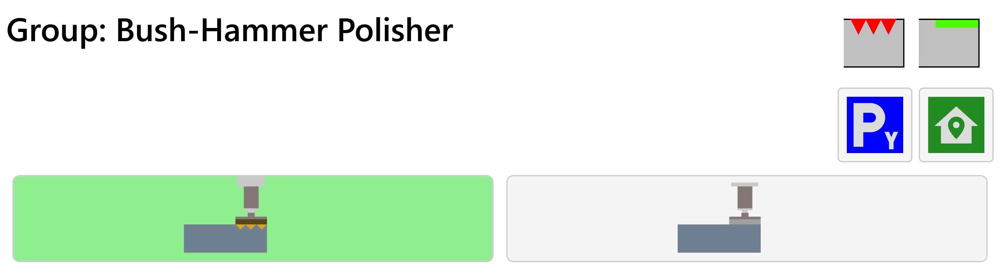
I pulsanti situati basso permettono all’operatore di cambiare la configurazione del gruppo bocciardatore pulitore, in base all’uso che si desidera farne.
 | Bocciardatura |
Pulitura |
Per poter cambiare configurazione o mandare il gruppo in posizioni specifiche, si utilizzano i pulsanti sottostanti.
 | Parcheggio |
 | Posizione iniziale |
Per l’elemento bocciardatore del gruppo, si deve definire la dimensione del diametro dell’utensile montato.
È necessario definire il diametro di questo elemento sia per entrambe le configurazioni ammesse dal gruppo, siccome l’utensile montato è differente.
Per ciascun elemento pulitore del gruppo, si deve inserire la dimensione del diametro dell’utensile montato.
Gestione nastro
Sezione che consente di gestire la velocità del nastro quando deve essere eseguita una lavorazione di bocciardatura.

 | Velocità lavoro nastro bocciardatura |
 | Velocità lavoro nastro ridotta bocciardatura |
 | Applica priorità velocità bocciardatura |
In questa pagina sono accessibili i messaggi di errore attivi in macchina ed il relativo storico.
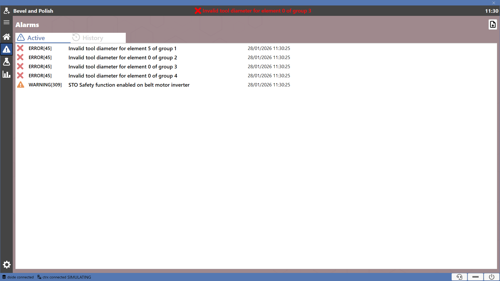
Categorie di allarmi
In questa pagina vengono distinte due categorie di allarmi.

 | Attivi |
 | Storico |
Tramite il pulsante in alto a destra è possibile personalizzare gli allarmi della macchina.
Carica file messaggi |
Attivi
In questo elenco vengono mostrati i messaggi relativi agli errori ed agli avvisi attualmente presenti in macchina, con relativo codice.
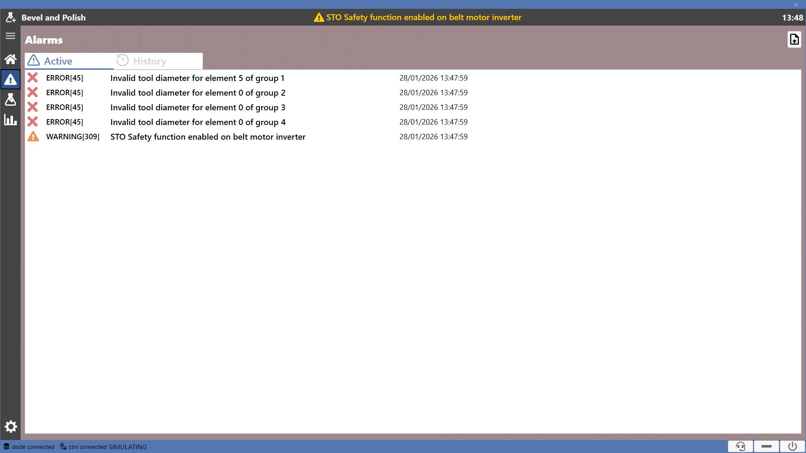
Storico
Questo elenco mostra la cronologia di tutti gli errori rilevati dalla macchina.
Per ogni elemento è possibile vederne il codice identificativo, lo stato di attivazione, una descrizione, data ed ora in cui è stato rilevato.

Il menù a comparsa posizionato in alto a destra permette di selezionare l’intervallo di tempo in cui visualizzare i messaggi.
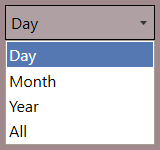
Tramite questa pagina è possibile visualizzare, creare e modificare le ricette per la lavorazione dei pezzi.
Le azioni sulle ricette sono gestite nel pannello sul lato sinistro, che contiene la lista di ricette, mentre la finestra di visualizzazione principale è utilizzata per mostrare:
La macchina, con i gruppi di lavoro attivi evidenziati.
Il pezzo selezionato con le lavorazioni applicate evidenziate.

Anteprima
Questa sezione viene utilizzata per raffigurare la ricetta selezionata. L’operatore può decidere se mostrare gli elementi della macchina che verranno utilizzati per quelle lavorazioni, oppure un’anteprima del pezzo risultante.
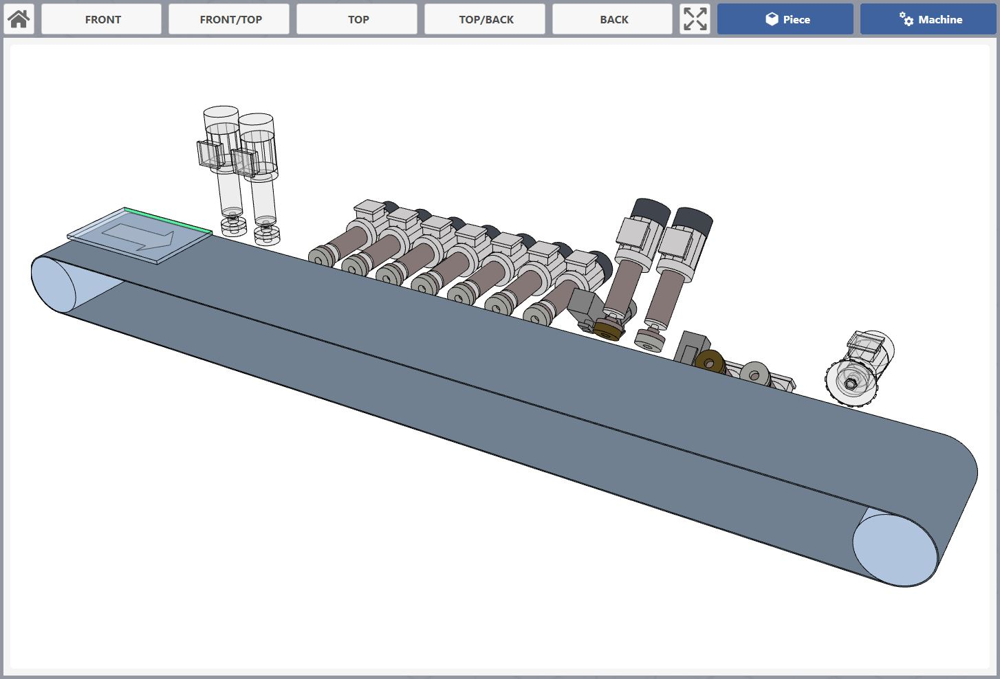
La barra situata in cima consente di interagire con l’angolazione della camera dell’anteprima. I pulsanti blu invece, permettono all’operatore di scegliere il modello da visualizzare nell’anteprima.
 | Visuale pezzo |
Visuale macchina |
Selezionando “Pezzo” viene mostrato il pezzo selezionato nella lista di ricette con le sue lavorazioni.
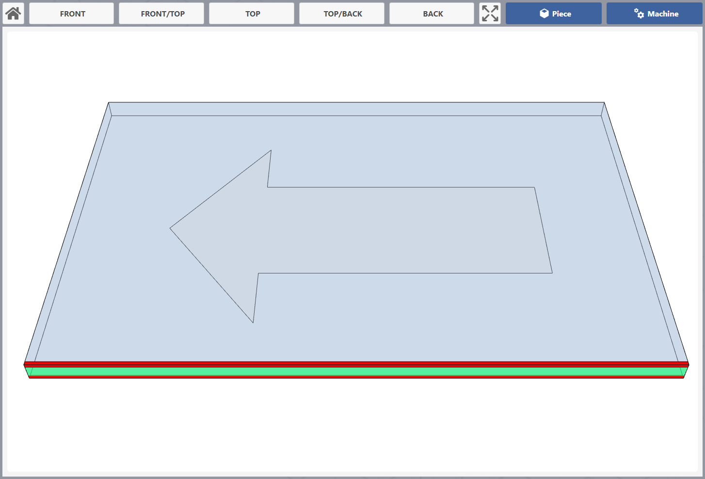
Pannello Ricette
Questo pannello permette di selezionare le ricette per la visualizzazione e di gestirne creazione, eliminazione, copia e modifica.
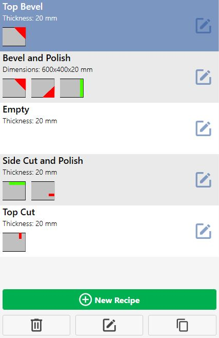
Ogni voce dell’elenco mostra il nome della ricetta, le dimensioni del pezzo che si intende lavorare, e le lavorazioni che la definiscono.

È possibile gestire le ricette dell’elenco con i pulsanti che si trovano in fondo.
Nuova ricetta | |
 | Elimina ricetta |
Modifica ricetta | |
 | Copia ricetta |
Nuova ricetta
Premendo il tasto “Nuova Ricetta“ si apre il pannello per la creazione di una nuova ricetta.
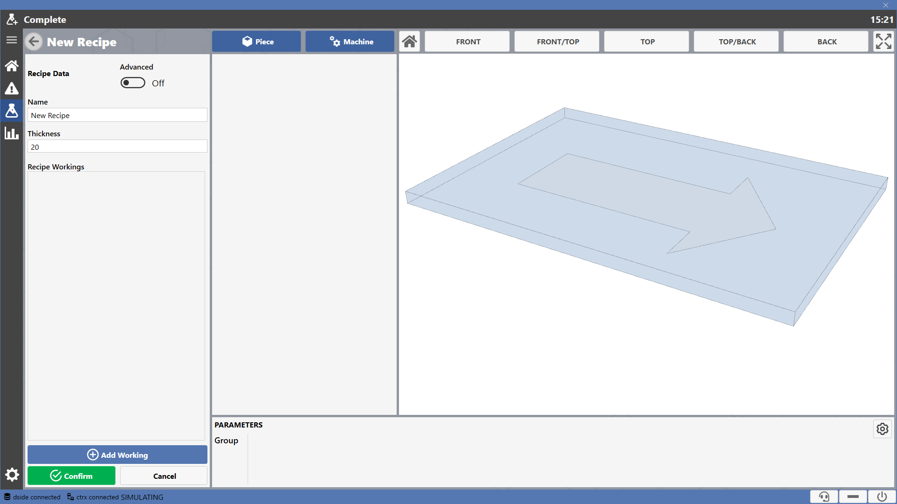
Dati ricetta
Tramite questa sezione è possibile inserire le informazioni principali per la nuova ricetta, e aggiungere lavorazioni.
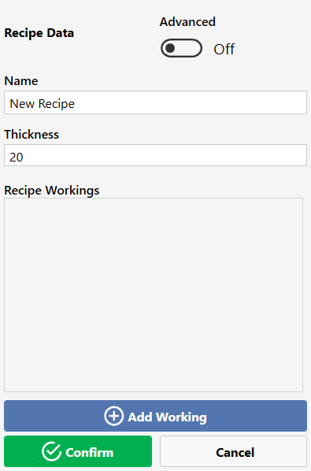
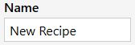 | Nome |
 | Spessore |
L’operatore può utilizzare il pulsante che si trova in alto a destra per rendere la ricetta avanzata.
 | Impostazioni avanzate |
Le impostazioni avanzate della ricetta permettono di inserire, oltre allo spessore, lunghezza e larghezza della ricetta, e in caso di lavorazioni non passanti di specificare riferimenti diversi per l’inizio e la fine della lavorazione.

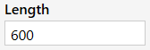 | Lunghezza |
 | Larghezza |
In basso si trova il pulsante per aggiungere lavorazioni alla ricetta.
Aggiungi lavorazione |
Aggiungi Lavorazione
Il pulsante “Aggiungi Lavorazione” apre una nuova scheda in cui è possibile selezionare la lavorazione desiderata.

Per aggiungere una lavorazione, premere sul pulsante che si trova sulla destra.
 | Applica lavorazione |
Selezione gruppo di lavorazione
Se la lavorazione selezionata può venire eseguita da più gruppi, l’operatore può decidere quale tra quelli disponibili utilizzare.

Una volta selezionato, quel gruppo non sarà più disponibile per quella lavorazione.
È possibile aggiungere più volte la stessa lavorazione alla ricetta fino a che ci sono gruppi disponibili.
Parametri di lavorazione
Selezionando e aprendo una nuova lavorazione compare la scheda della lavorazione del tipo selezionato, con i relativi dati inseribili dall’utente.
Per ogni lavorazione è possibile inserire i parametri che ne definiscono la geometria.
Nell’anteprima vengono evidenziate le grandezze interessate dai parametri della lavorazione.

Parametri gruppo
La modalità di visualizzazione della macchina permette di vedere il pezzo e la macchina, in particolare quali gruppi risultano attivi e quali non attivi per eseguire le lavorazioni applicate alla ricetta.
Il gruppo associato alla lavorazione selezionata è colorato di verde.

Dal pannello sottostante è presente un accesso rapido ai parametri del gruppo che effettua la lavorazione, da cui è possibile attivare e disattivare i singoli elementi.
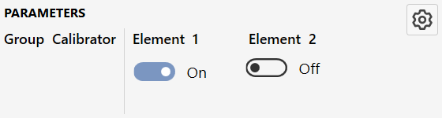
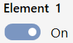 | Attiva/Disattiva elemento |
 | Pannello parametri avanzati |
Gli elementi disattivati saranno mostrati in grigio scuro nella modalità di visualizzazione della macchina.

Modifica ricetta
Dalla pagina iniziale e dalla pagina ricette, premendo il tasto di modifica della ricetta selezionata si apre il pannello per la modifica.
È possibile modificare le informazioni principali, e aggiungere lavorazioni.

Le lavorazioni presenti sulla ricetta vengono visualizzate nella finestra di visualizzazione.
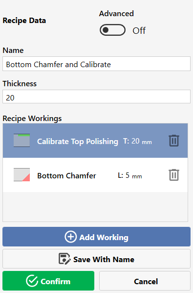
Le lavorazioni che compongono la ricetta sono visibili all’interno dell’elenco sottostante.
Ogni voce mostra un’anteprima della lavorazione, il nome che la identifica, ed alcune misure che la caratterizzano.
Selezionando la lavorazione, è possibile modificarne i parametri.
Per eliminare una lavorazione dalla ricetta, utilizzare il pulsante che si trova sulla destra della rispettiva riga.
 | Rimuovi lavorazione |
Al termine della modifica, è possibile decidere se applicare le modifiche alla ricetta originale, oppure crearne una nuova con tutte le lavorazioni assegnate.
Salva con nome |
Ogni lavorazione consente all’operatore di modificare i parametri che ne definiscono la geometria. Nell’anteprima a destra vengono raffigurate le grandezze interessate.

Lavorazioni disponibili
Il programma mette a disposizione le seguenti lavorazioni.
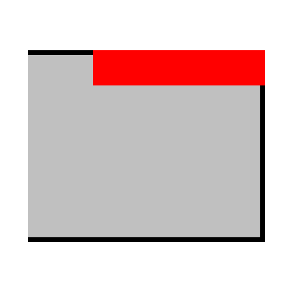 | Calibratura superiore |  | Calibratura lucidatura superiore |
 | Rettifica costa | 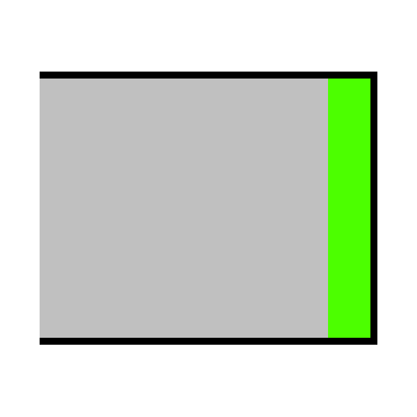 | Lucidatura costa |
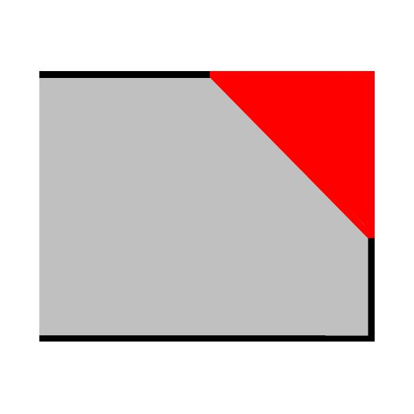 | Smusso superiore |  | Smusso inferiore |
 | Taglio sopra |  | Taglio sotto |
 | Taglio costa |  | Taglio posizionamento manuale |
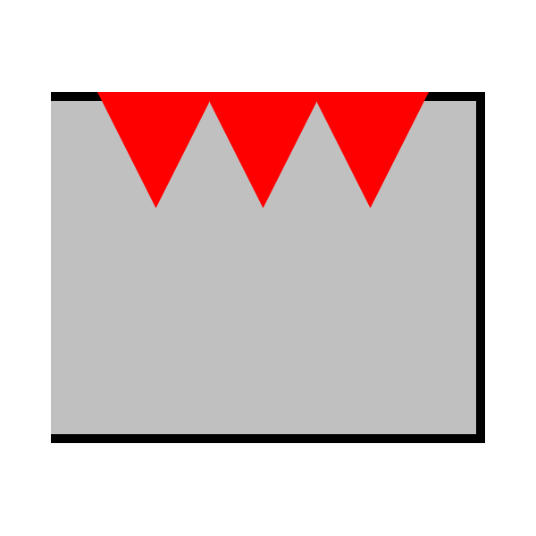 | Bocciardatura |  | Pulitura superiore |
Le lavorazioni effettivamente disponibili dipendono dalla configurazione della macchina, ovvero da quali gruppi sono montati su di essa.
Lavorazioni della ricetta
Le lavorazioni che compongono la ricetta sono riportate all’interno dell'elenco della sezione di sinistra.
Ogni voce mostra un’anteprima della lavorazione, il nome che la identifica, ed alcune misure che la caratterizzano.

Selezionando la ricetta, vengono mostrati tutti i parametri che la definiscono ed un anteprima. L’operatore può modificare i parametri.
Per rimuovere una lavorazione dalla ricetta corrente, usare il pulsante che si trova sulla destra della rispettiva riga.
 | Rimuovi lavorazione |
Parametri di lavorazione
I parametri di lavorazione, possono essere inseriti nell’apposita sezione.

Nella parte superiore vengono mostrati i parametri specifici per la lavorazione selezionata.
Per le lavorazioni che lo consentono, l’operatore può decidere se devono essere eseguite per tutta la lunghezza del pezzo oppure no.
Lavorazione passante |
In caso di lavorazione non passante, vengono mostrati ulteriori parametri.
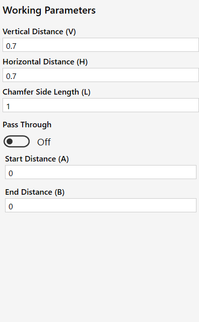
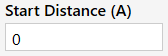 | Distanza inizio |
 | Distanza fine |
Nel caso in cui sia stata impostata la ricetta avanzata, all’operatore viene fornito più controllo sui parametri di lavorazioni non passanti.

 | Lunghezza |
Blocca misura | |
 | Inizio riferimento inizio |
 | Fine riferimento inizio |
Anteprima
Nella sezione di destra, viene mostrata un’anteprima della lavorazione sul modello del pezzo, evidenziando le dimensioni che l’operatore deve inserire all’interno dei parametri.
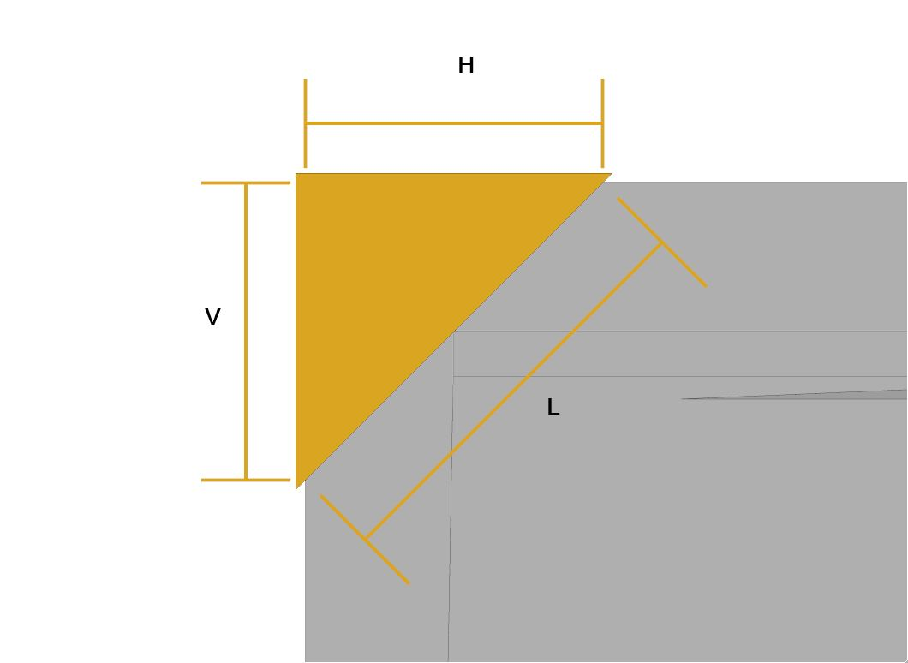
Spostando la visuale sul modello della macchina, viene invece evidenziato in verde il gruppo assegnato alla lavorazione.
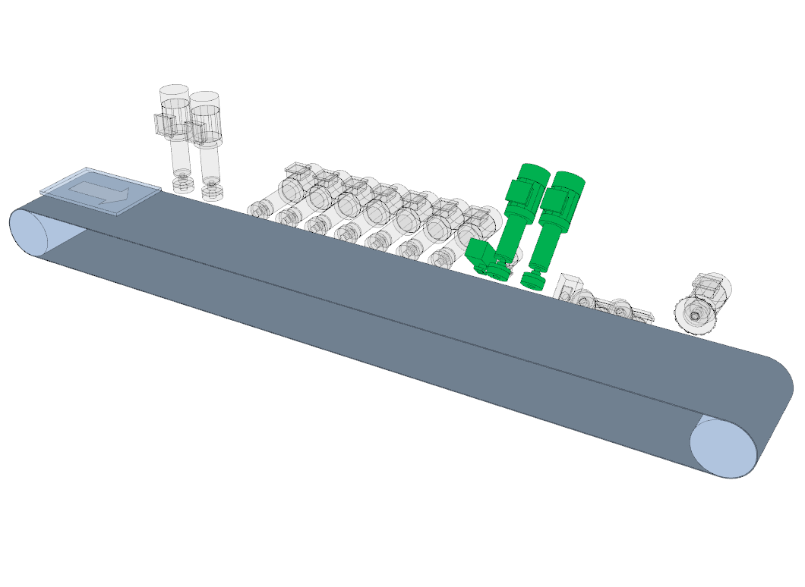
Questa lavorazione consente di asportare del materiale dalla parte superiore del pezzo portandolo allo spessore desiderato.

Parametri

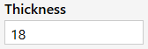 | Spessore |
 | Larghezza |
Gruppi disponibili
Gruppo calibratore/lama su costa | Gruppo taglio lama |
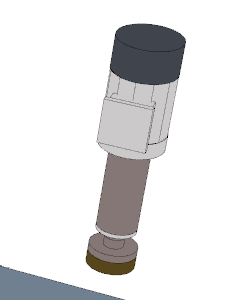 |  |
Questa lavorazione consente di asportare del materiale dalla parte superiore del pezzo e lucidare la stessa zona.

Parametri

Spessore |
Non è possibile modificare la larghezza di questa lavorazione.
La larghezza della lavorazione sul pezzo dipende dal diametro dell’utensile montato sull’elemento calibratore.
Gruppi disponibili
Questa lavorazione può essere eseguita esclusivamente dal gruppo calibratore pulitore superiore.
Gruppo calibratore superiore |
 |
Questa lavorazione consente di asportare del materiale dalla costa del pezzo.
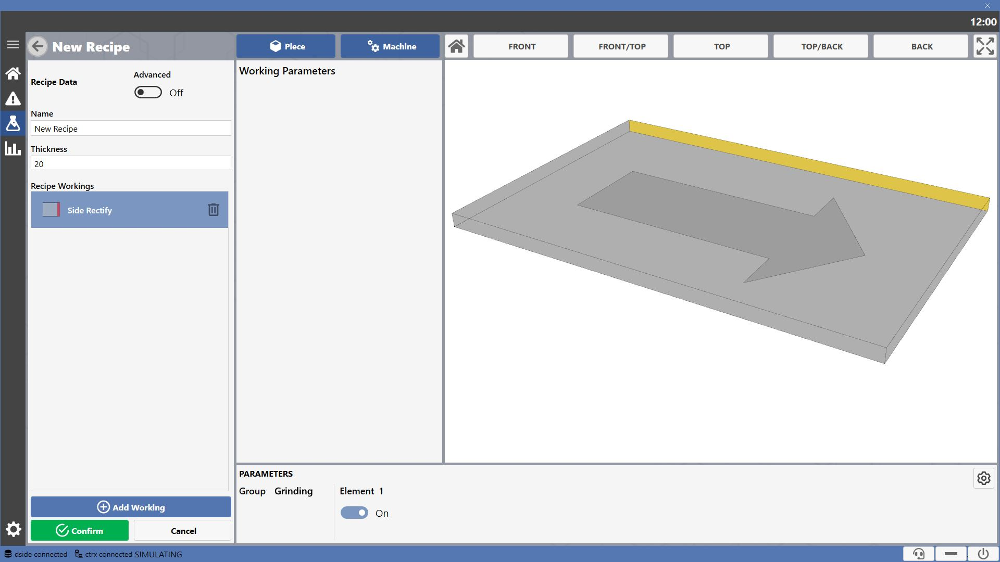
Parametri

Gruppi disponibili
Questa lavorazione può essere eseguita dal gruppo taglio lama/rettifica.
Gruppo taglio lama/rettifica |
 |
Questa lavorazione consente di lucidare la costa del pezzo.

Parametri
La lavorazione non necessita di parametri.

Questa lavorazione può essere eseguita sia in modo passante che cieco.
In caso di lavorazione non passante, la distanza tra il punto di inizio ed il punto di fine della lavorazione non può essere minore del diametro degli abrasivi montati sugli elementi pulitori.
Gruppi disponibili
Gruppo lucidatura costa |
 |
Questa lavorazione consente di effettuare uno smusso dello spigolo superiore della costa del pezzo.

Parametri
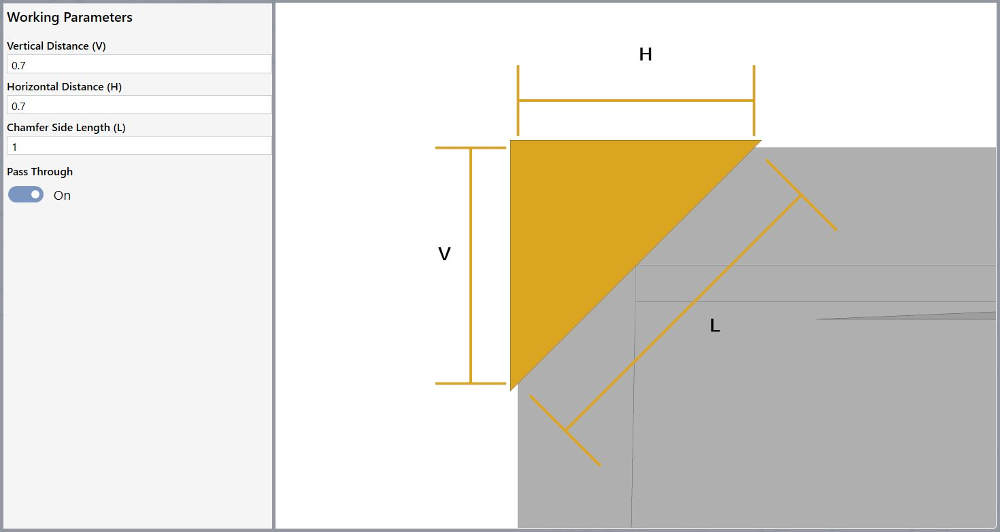
 | Distanza Verticale |
 | Distanza orizzontale |
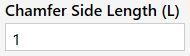 | Lunghezza smusso |
Gruppi disponibili
Gruppo smusso superiore |
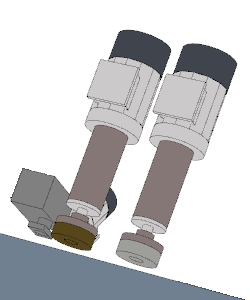 |
Questa lavorazione consente di effettuare uno smusso dello spigolo inferiore della costa del pezzo.

Parametri
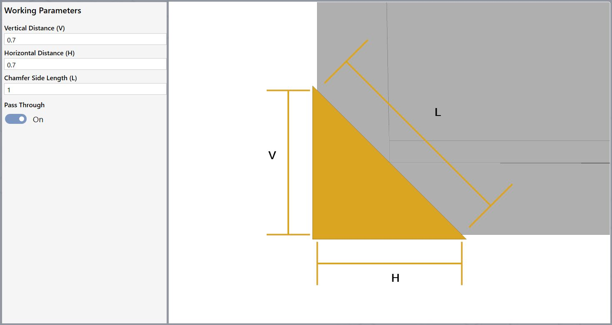
 | Distanza Verticale |
 | Distanza orizzontale |
 | Lunghezza smusso |
Gruppi disponibili
Gruppo smusso inferiore |
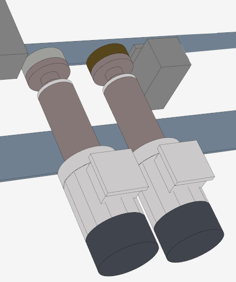 |
Questa lavorazione consente di eseguire un taglio sulla superficie superiore del pezzo.

Parametri
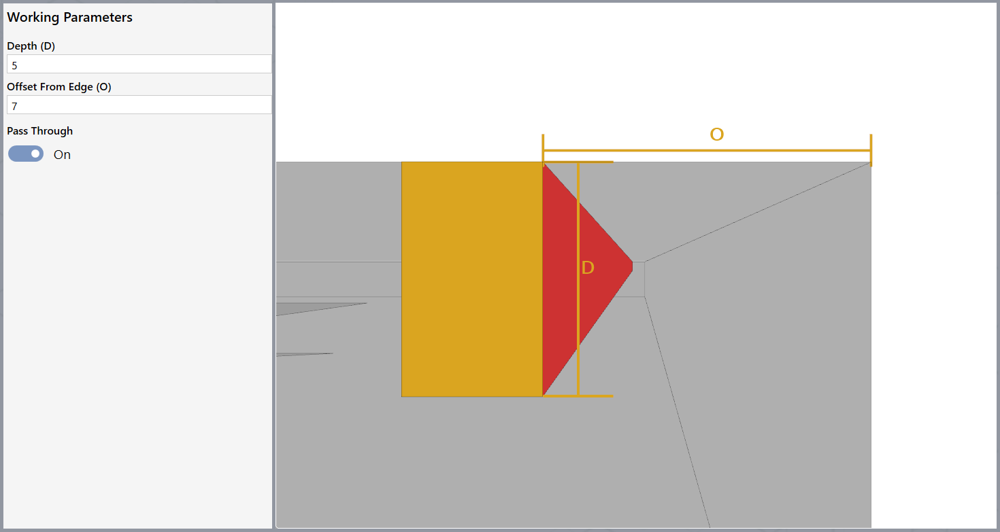
 | Profondità |
 | Distanza dal bordo |
Gruppi disponibili
Gruppo taglio lama/rettifica |
 |
Questa lavorazione consente di eseguire un taglio sulla superficie inferiore del pezzo.

Parametri

 | Profondità |
 | Distanza dal bordo |
Gruppi disponibili
Gruppo taglio lama/rettifica |
 |
Questa lavorazione consente di eseguire un taglio sulla costa del pezzo.
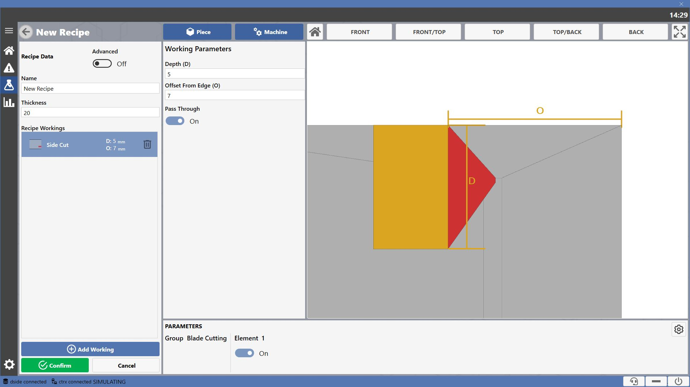
Parametri
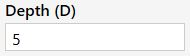 | Profondità |
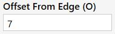 | Distanza dal bordo |
Gruppi disponibili
Gruppo taglio lama/calibratore e lama su costa |
 |
Questa lavorazione consente di assegnare manualmente una posizione ed un’inclinazione al disco per eseguire un taglio passante sul pezzo.

Parametri

Gruppi disponibili
Gruppo taglio lama |
 |
Questa lavorazione consente di irruvidire una parte della superficie superiore del pezzo.

Parametri

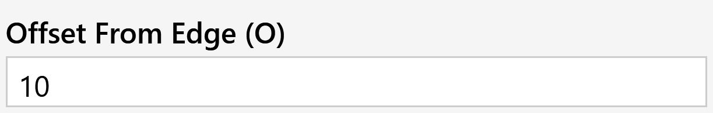 | Distanza dal bordo |
 | Distanza inizio velocità massima |
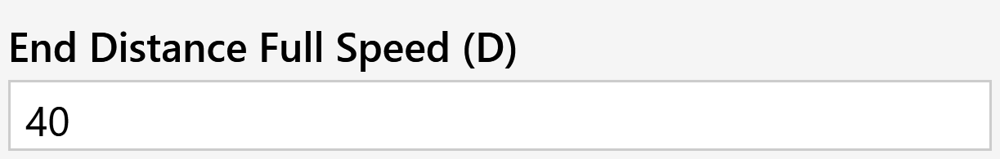 | Distanza inizio velocità massima |
Gruppi disponibili
Gruppo bocciardatore/pulitore |
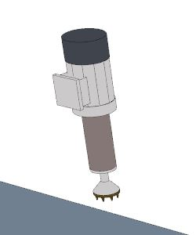 |
Questa lavorazione consente di pulire una zona della superficie superiore del pezzo.

Parametri

 | Larghezza pulitura |
Gruppi disponibili
Gruppo bocciardatore/pulitore |
 |
Il pannello parametri avanzati permette di visualizzare anticipi/ritardi delle varie operazioni eseguite dal gruppo assegnato alla lavorazione selezionata, e dai suoi elementi.
Il gruppo interessato è evidenziato di colore verde all’interno dell’anteprima con la visuale sul modello della macchina.
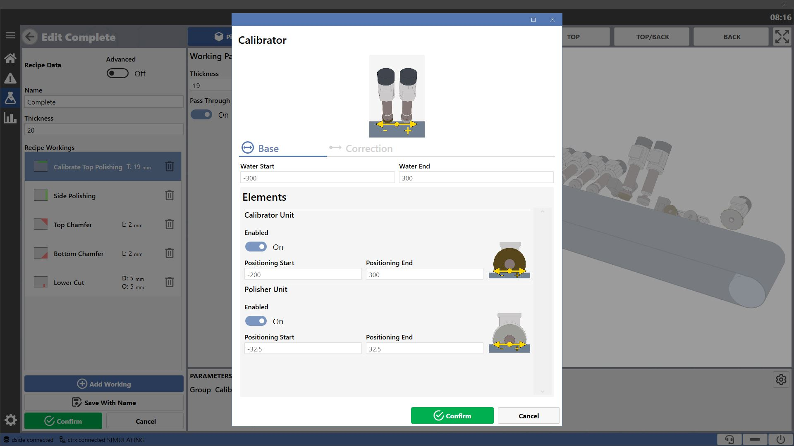
Sezioni
Le informazioni fornite da ciascuna finestra sono suddivise in due sezioni.
Base | |
 | Correzione |
La modifica di tutti i parametri di questo pannello è disabilitata per l’operatore standard, può essere effettuata solo da esperto autenticato tramite apposita password.
Base
In questa sezione si possono visualizzare i parametri che definiscono i comportamenti predefiniti per il gruppo e relativi elementi quando eseguono lavorazioni passanti.
I comportamenti per le lavorazioni non passanti sono calcolati automaticamente dalla macchina in base alla geometria delle lavorazioni da eseguire.
I parametri fanno sempre riferimento alla distanza tra il centro dell’elemento, o gruppo, che deve svolgere l’azione indicata, ed il punto di riferimento, che sia testa o coda, del pezzo che devono lavorare.
Per rappresentare degli anticipi si utilizzano valori negativi. Per i ritardi invece, si utilizzano valori positivi.
Lo zero rappresenta il momento in cui il punto di riferimento del pezzo, che sia testa o coda, si trova esattamente sotto al centro dell’elemento o gruppo in questione.

Gruppo
Nella parte superiore vengono mostrati i parametri che gestiscono il funzionamento di alcuni comportamenti specifici del gruppo selezionato.
Viene sempre indicato il tempismo di accensione e di spegnimento dell’acqua del gruppo.

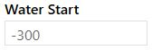 | Accensione acqua |
 | Spegnimento acqua |
Elemento
Nell’elenco sottostante vengono mostrati i parametri che gestiscono ciascun elemento che compone il gruppo. Vengono sempre indicati gli anticipi ed i ritardi del posizionamento dell’elemento.
Inoltre, l’operatore può decidere se utilizzare o meno l’elemento per la lavorazione selezionata.

Abilitazione elemento | |
 | Inizio intervento |
 | Fine intervento |
Correzioni
Questi parametri permettono di applicare degli offset positivi o negativi fissi alle azioni visualizzate. Si utilizzano per correggere eventuali ritardi o anticipi rilevati nell’esecuzione di queste azioni.
Per esempio, se l’elemento 1 del gruppo 5 esegue l’inizio del posizionamento sempre con un ritardo di 10mm è possibile impostare il relativo parametro a -10 per correggere il problema.
Le correzioni si applicano sia alle lavorazioni passanti che non passanti.
I parametri fanno sempre riferimento alla differenza di spazio tra il momento in cui un’operazione viene eseguita con le impostazioni di base dell’elemento, o del gruppo, e quello in cui si desidera venga compiuta.
Per rappresentare degli anticipi si utilizzano valori negativi. Per i ritardi invece, si utilizzano valori positivi.
Lo zero rappresenta il momento esatto in cui viene eseguita l’azione utilizzando i parametri di base.
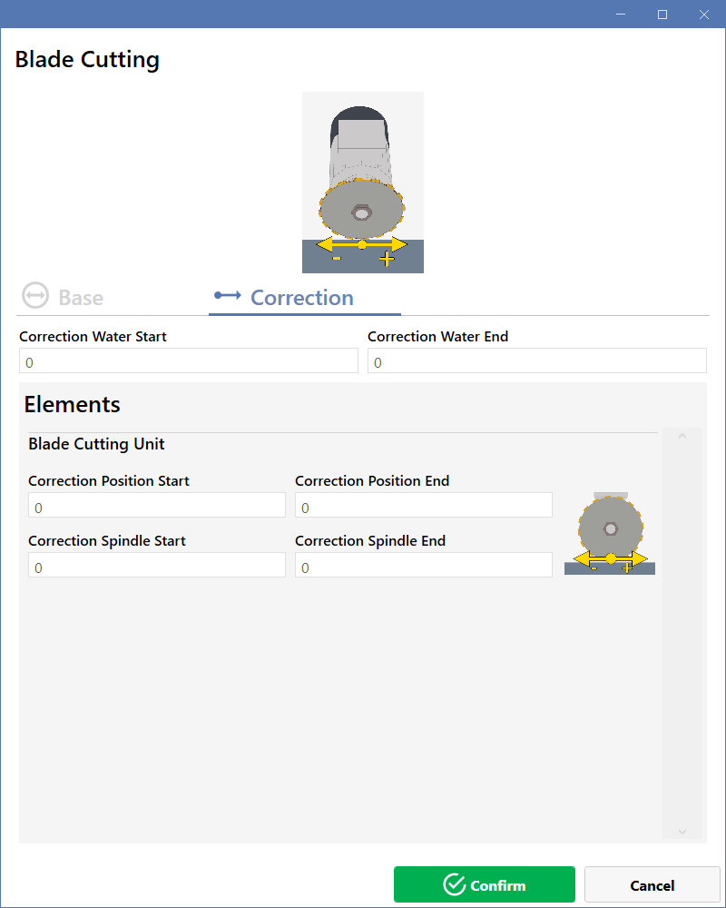
Gruppo
La parte superiore è dedicata alle correzioni delle operazioni del gruppo.
Viene sempre indicata la correzione dell’anticipo/ritardo di accensione e spegnimento dell’acqua.
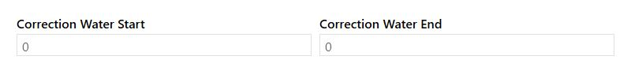
Correzione accensione acqua | |
 | Correzione spegnimento acqua |
Elemento
Nell’elenco sottostante vengono mostrati i parametri che consentono di applicare correzioni alle operazioni svolte da ciascun elemento del gruppo.
È sempre possibile impostare anticipi o ritardi per il posizionamento dell’elemento o l’accensione del mandrino.

Correzione inizio intervento | |
Correzione fine intervento | |
 | Correzione accensione mandrino |
 | Correzione spegnimento mandrino |
Gruppo calibratore pulitore
Base
I parametri di base che regolano le azioni del gruppo sono solamente quelli generali.
Sia la sezione relativa all’elemento calibratore, sia quella dell’elemento pulitore, non aggiungono nulla alle impostazioni di base già descritte.
Correzioni
L’elemento calibratore è vincolato all’asse Z del gruppo. Se si desiderano apportare correzioni, è necessario agire sui parametri del gruppo.
Nella sezione dedicata al gruppo, è quindi possibile agire sugli anticipi e ritardi legati al posizionamento dell’asse.
 | Correzione inizio posizionamento |
 | Correzione fine posizionamento |
Di conseguenza, nella sezione dell’elemento calibratore non è possibile applicare correzioni al posizionamento dell’elemento.
Per l’elemento pulitore non vengono mostrati altri parametri rispetto a quelli comuni a tutti gli elementi.
Gruppo lucidatore costa
Base
Tra i parametri di questo gruppo, viene indicato il tempismo di accensione e di spegnimento del mandrino che ne regola l’oscillazione.
 | Abilitazione oscillazione |
Accensione oscillazione | |
 | Spegnimento oscillazione |
La sezioni degli elementi pulitori non aggiungono nulla alle impostazioni di base già descritte.
Correzioni
Nella sezione dedicata al gruppo, è possibile agire sugli anticipi e ritardi legati al funzionamento dell’oscillazione.
 | Correzione accensione oscillazione |
 | Correzione spegnimento oscillazione |
Nella sezione dedicata agli elementi pulitori, non vengono mostrati altri parametri rispetto a quelli comuni già descritti.
Gruppo smusso superiore
Base
I parametri di base che regolano le azioni del gruppo sono solamente quelli generali.
Nella sezione dedicata all’elemento calibratore, vengono mostrati i parametri che regolano gli anticipi e ritardi del freno e del pattino.

 | Inizio freno rientro |
Fine freno rientro | |
Inizio posizionamento pattino | |
Fine posizionamento pattino |
La sezione relativa all’elemento pulitore non aggiunge nulla alle impostazioni di base già descritte.
Correzioni
Nella sezione dedicata al gruppo è possibile agire sugli anticipi e ritardi legati al posizionamento dell’asse.

Sia la sezione relativa all’elemento calibratore, sia quella dell’elemento pulitore, non aggiungono nulla alle impostazioni di correzione già descritte.
Gruppo smusso inferiore
Base
I parametri di base che regolano le azioni del gruppo sono solamente quelli generali.
Nella sezione dedicata all’elemento calibratore, vengono mostrati i parametri che regolano gli anticipi e ritardi del freno e del pattino.
Nella sezione dedicata agli elementi pulitori, non vengono mostrati altri parametri rispetto a quelli comuni già descritti.
Correzioni
Nella sezione dedicata al gruppo, non vengono mostrati altri parametri rispetto a quelli comuni.
Sia la sezione relativa all’elemento calibratore, sia quella dell’elemento pulitore, non aggiungono nulla alle impostazioni di correzione già descritte.
Gruppo taglio lama
Base
I parametri di base che regolano le azioni del gruppo sono solamente quelli generali.
La sezione relativa all’elemento non aggiunge nulla alle impostazioni di base già descritte.
Correzioni
Nella sezione dedicata al gruppo, non vengono mostrati altri parametri rispetto a quelli comuni.
La sezione dedicata all’elemento non aggiunge nulla alle impostazioni di correzione già descritte.
Gruppo bocciardatore pulitore
Base
I parametri di base che regolano le azioni del gruppo sono solamente quelli generali.
Nella sezione relativa all’elemento bocciardatore, è possibile esclusivamente gestirne l’attivazione.

Le sezioni relative agli elementi pulitori non aggiungono nulla alle impostazioni di base già descritte.
Correzioni
Nella sezione dedicata al gruppo, non vengono mostrati altri parametri rispetto a quelli comuni.
Sia la sezione relativa all’elemento bocciardatore, sia quelle degli elementi pulitori, non aggiungono nulla alle impostazioni di correzione già descritte.
La pagina “Statistiche“ è la pagina in cui è possibile visualizzare le statistiche relative alla macchina e al lavoro svolto dalla macchina.

Categorie
La pagina principale mette a disposizione due pulsanti, da cui è possibile accedere rispettivamente alle sotto-pagine specifiche per la tipologia di statistiche desiderate.

 | Statistiche macchina |
 | Pezzi lavorati |
Per poter navigare tra le pagine vengono messi a disposizione i seguenti pulsanti situati in alto a sinistra di ciascuna schermata.
 | Indietro |
 | Ricarica |
Statistiche macchina
In questa pagina vengono monitorate le statistiche relative all’utilizzo della macchina.

In questa pagina viene tenuta traccia delle seguenti statistiche:
Pezzi totali | Numero di pezzi lavorati. |
Lunghezza totale pezzi | Lunghezza totale dei pezzi lavorati. |
Avanzamento nastro | Spazio percorso dal nastro. |
Lavoro nastro | Spazio percorso dal nastro in fase di lavorazione. |
Tempo funzionamento nastro | Tempo di funzionamento del nastro. |
Tempo accensione macchina | Tempo in cui la macchina è stata accesa. |
Tempo lavoro macchina | Tempo in cui la macchina ha lavorato. |
La pagina Statistiche Macchina permette di visualizzare le statistiche grazie ai tre pannelli:
Totali giornalieri
Totali lavoro
Totali macchina
In ciascun pannello vengono riproposte statistiche riguardanti le medesime grandezze misurate, ma con condizioni differenti a seconda della sezione che si osserva.
Totali giornalieri
In questa sezione è presente un grafico che mostra la statistica desiderata nell’arco temporale selezionato.
In alto è presente presente una barra per filtrare le statistiche da visualizzare nel grafico.

Il primo componente della barra permette di selezionare la statistica desiderata.

I bottoni permettono di selezionare un intervallo temporale, mostrando in verde quello selezionato.
 | Statistiche giornaliere |
 | Statistiche mensili |
Statistiche annuali | |
 | Statistiche totali |
 | Statistiche personalizzate |
L’intervallo personalizzato può venire modificato usando gli appositi componenti situati alla destra del pulsante. Premere sull’icona a forma di calendario a destra della data e selezionare la data che si vuole inserire per l’intervallo.

Totali lavoro
Nei totali di lavoro è possibile visualizzare tramite il grafico circolare la percentuale di avanzamento del lavoro, calcolata come il rapporto tra il progresso compiuto e l’obbiettivo finale.

Le statistiche riferite alla quota obiettivo vengono visualizzate in alto a sinistra.
Obiettivo | Valore prefissato di lunghezza dei pezzi da lavorare. |
 | Modifica quota obiettivo |
Progressivo | Lunghezza dei pezzi lavorati dall’ultimo azzeramento. |
Percentuale avanzamento | Percentuale di avanzamento del lavoro, calcolata come il rapporto tra il progresso compiuto e l’obbiettivo finale. |
Con il pulsante situato in alto a destra è possibile azzerare i contatori.
 | Reset contatori |
Totali macchina
In questa sezione vengono mostrate statistiche generali riguardanti tutto il periodo di attività della macchina.

Pezzi lavorati
Tramite questa pagina l’operatore può filtrare e visualizzare informazioni specifiche dei pezzi lavorati.
Nell’elenco che costituisce la parte principale di questa schermata, vengono catalogati tutti i pezzi lavorati. A ciascuna riga corrisponde un pezzo.
È possibile selezionare una riga premendo sul quadrato situato sulla sinistra.
Con il pulsante che si trova in alto a destra è possibile esportare le statistiche selezionate.
 | Esporta |
Filtraggio statistiche
La barra del filtraggio permette di selezionare diverse condizioni con cui filtrare le statistiche.
Premendo il primo componente della barra è possibile selezionare la proprietà da filtrare.

Premendo il secondo componente è possibile selezionare l’operazione che verrà eseguita per determinare quali elementi risulteranno dopo il filtraggio.

Il valore da utilizzare per l’operazione di filtraggio va inserito nella barra adiacente ai due componenti appena descritti.

Il filtro selezionato viene aggiunto alla barra a destra del bottone, è possibile rimuoverlo premendo sulla X a sinistra.

Di seguito si elencano i pulsanti utili per svolgere le operazioni sopra descritte.
 | Aggiungi filtro |
Rimuovi filtri |
Se il numero di elementi selezionati è maggiore di quelli visibili, è possibile navigare le pagine grazie ai bottoni numerati in basso. Il numero di pagina selezionato è evidenziato in verde.

È possibile selezionare il numero di righe per pagina che è possibile visualizzare.

La seguente schermata è la pagina delle impostazioni, che permette all’utente di configurare vari parametri di sistema.

Sezioni
Per facilitare la navigazione, le impostazioni sono suddivise in sezioni visualizzabili cliccando sulle icone in alto.
 | Applicazione |
 | Utente |
 | Database |
 | Connessione |
Grafica | |
 | Statistiche |
 | Macchina |
 | Tutto |
Barra di ricerca
Sotto all’elenco dei parametri è presente una barra di ricerca per filtrare le voci desiderate.
Elimina filtro |
Altri pulsanti
I basso a destra sono collocati alcuni pulsanti che permettono di richiedere assistenza da remoto o spegnere la macchina.
 | Accesso amministratore |
Teleassistenza | |
 | Spegni |
Versione programma
Nell’angolo in basso a destra di questa pagina è visibile la versione del software D-Edge attualmente installata.
 | Versione software |